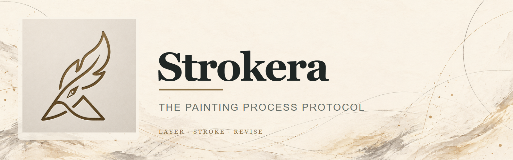
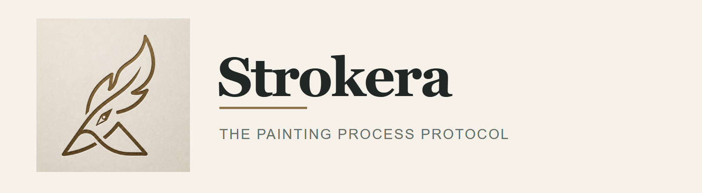
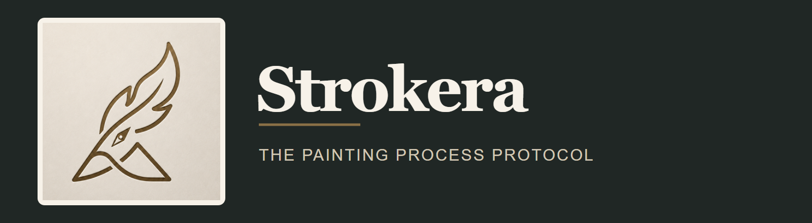
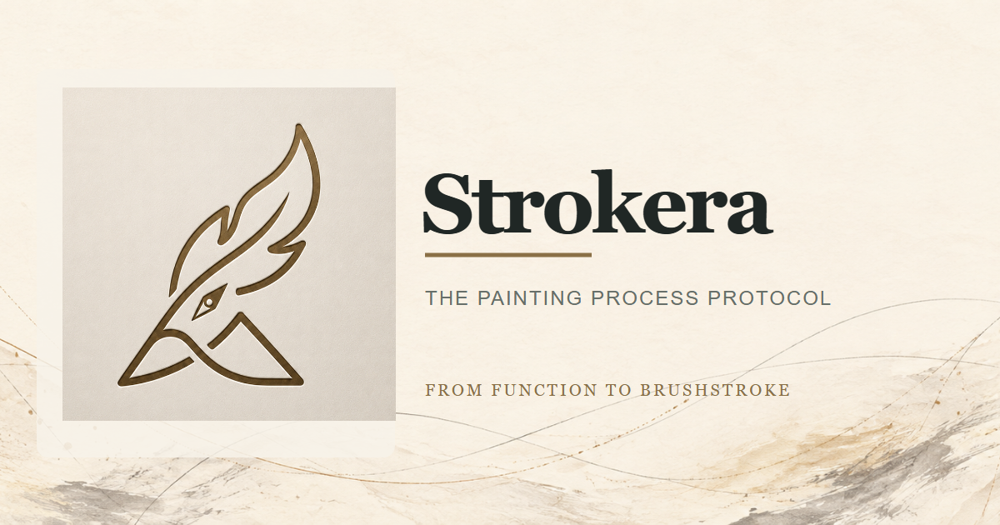
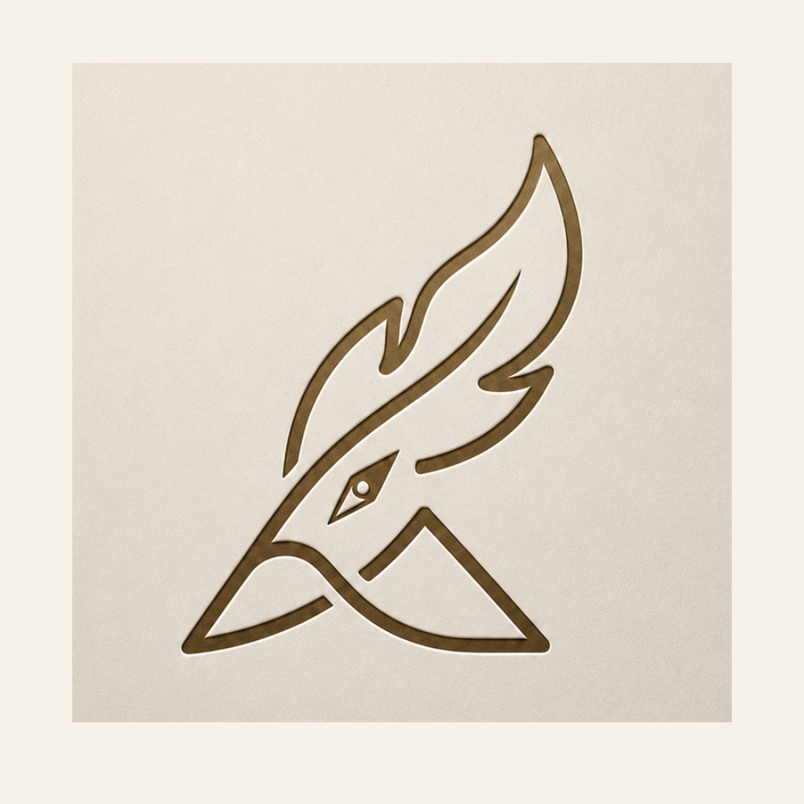
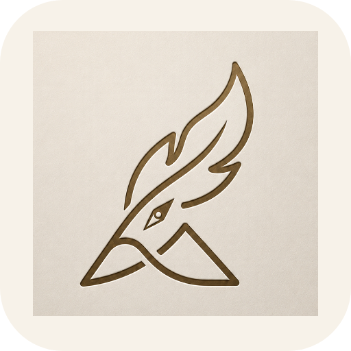
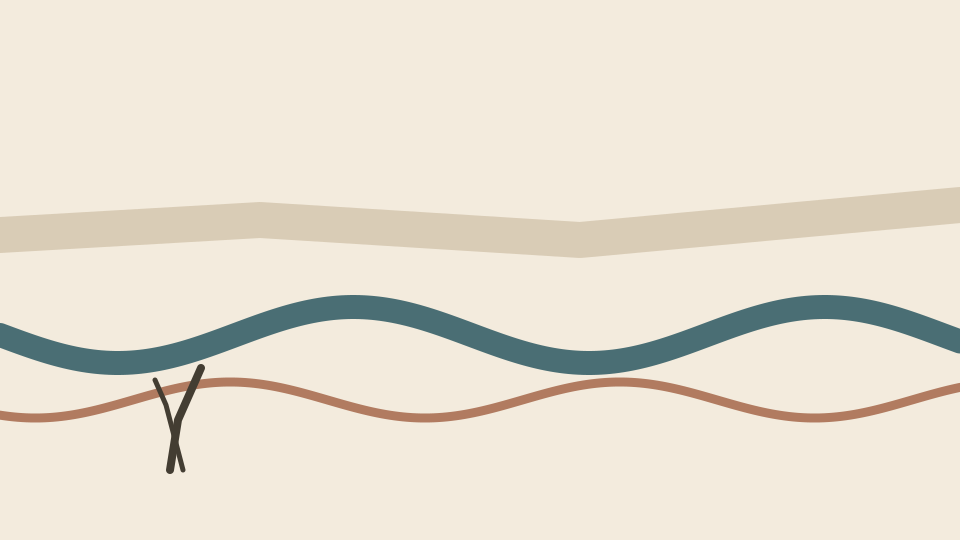

The painting process protocol
Strokera · 品牌视觉套件
以原始金色笔触标志为核心，让函数曲线、纸面和真实笔触共同构成界面语言。协议负责结构，画布负责过程，视觉始终为画家留出控制空间。
横版主视觉

横版组合


社交与图标



正方形资产为头像和应用入口单独适配，不直接裁切横图。
色彩
纸白 #F7F2E9深墨 #202725古金 #8A7046灰绿 #676F69
工作台元素示意
以下是视觉方向示意，并非当前已实现的产品界面。
Canvas / 960 × 540

Layers
03 前景笔触2 strokes
02 河流曲线2 strokes
01 远景底色1 stroke